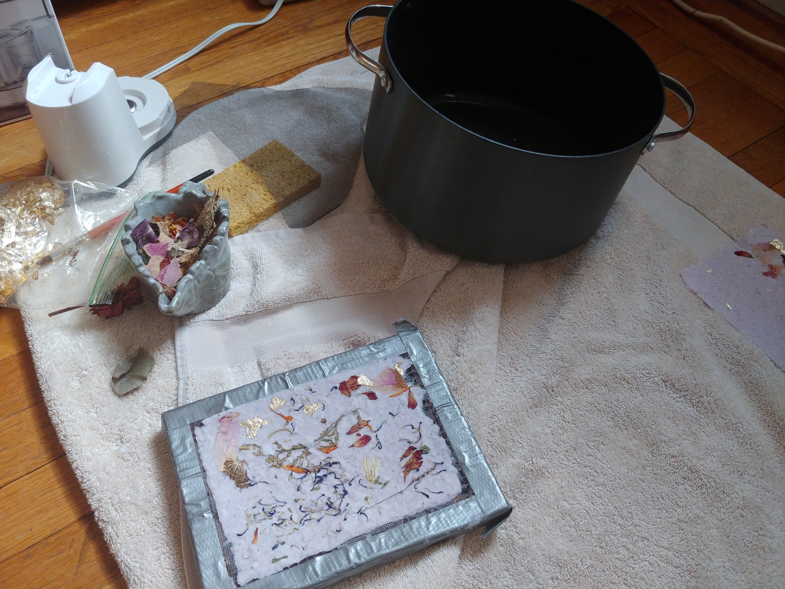
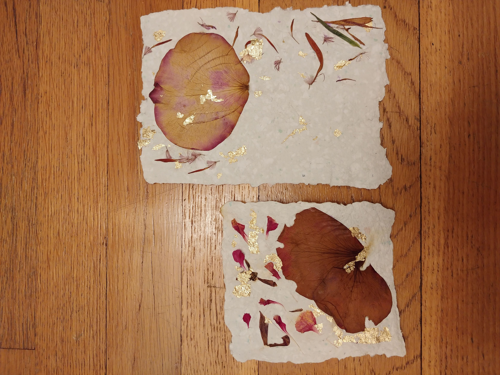

Making paper was a fun, but laborious activity. I wrote ALOT of letters to friends during the quarantine. My friend, Nina has a typewriter and I thought it would be a fun idea to send her handmade paper that she could use her typewriter to type out a story, or poem on, and send back to me. I treasure these collaborative artworks.

I followed the steps in this helpful tutorial on how to make a mould and deckle which is handy in the creation of your handmade paper. A mould and deckle will be a sort of portrait frame for your paper. You'll need chicken wire, a staple gun, duct tape and an old picture frame.
